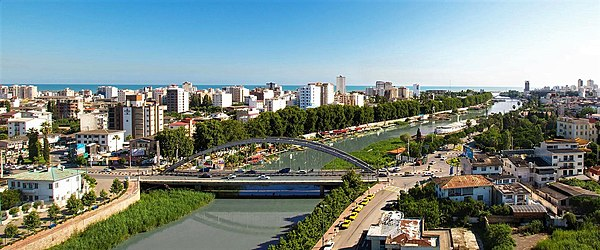
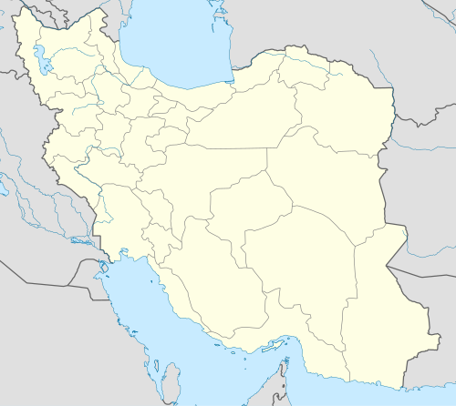

Babolsar (Persian: بابلسر, also Romanized as Bābolsar and Bābul Sar; also known as Mashhadsar (Persian: مَشهَدسَر), also Romanized as Mashhad-i-Sar and Meshed-i-Sar)[2] is a city and capital of Babolsar County, Mazandaran Province, Iran. It is located alongside the Caspian Sea. At the 2016 census, the city population was 75,761, in 24,666 families.
Geography
Babolsar is located on the southern coast of the Caspian Sea. Since the Babol river passes through the city, both the bank of the river and the beach of the sea form tourist attractions in the city. The city is home to the major faculties of the University of Mazandaran. Babolsar has an area of 446 square kilometers.
History
The city acquired its current name in 1927. The city's historic name is MaÞhad-e Sar or Mashhadsar, meaning "the special way to Mashhad, referring to the only road connecting the northwest of Iran to the northeast, including Mashhad, which passed through Babolsar. By the 18th century, Babolsar had become a busy commercial port. During the reign of Nadir Shah, it was the base for Iran's Caspian fleet. By 1909, the port yielded 12 percent of the total customs revenue of Iran. However, by 1895, ports in Gilan were already competing with Babolsar. During Reza Shah's reign, Babolsar lost much of its remaining trade to the new port of Bandar-e Shah at the terminus of the trans-Iranian railroad. The cargo handled at Babolsar in the years of 1935 and 1936 was only 25,000 tons. A modern quarter and a hotel were built during this period. The end of World War II brought a new era of vitality to the city as a summer seaside resort for people from Tehran, which gave rise to a new phase of rapid expansion. Babolsar's population increased from about 3,500 in 1945 to 11,781 in 1966 and 18,810 in 1976.
Climete
| Month | Jan | Feb | Mar | May | Jun | Jul | Aug | Sep | Oct | Nov | Dec |
|---|---|---|---|---|---|---|---|---|---|---|---|
| Record high °C (°F) | 11 | 12 | 13 | 13 | 13 | 13 | 15 | 13 | 13 | 14 | 13 |
| Average high °C (°F) | 15 | 16 | 16 | 16 | 16 | 16 | 16 | 16 | 16 | 16 | 16 |
References
- Statistical Center of Iran > Home
- Babolsar can be found at GEOnet Names Server, at this link, by opening the Advanced Search box, entering "-3054346" in the "Unique Feature Id" form, and clicking on "Search Database
- "2016 Iran Census". Archived from the original on 2017-03-14.
Bablosar
Babolsar Bridge
